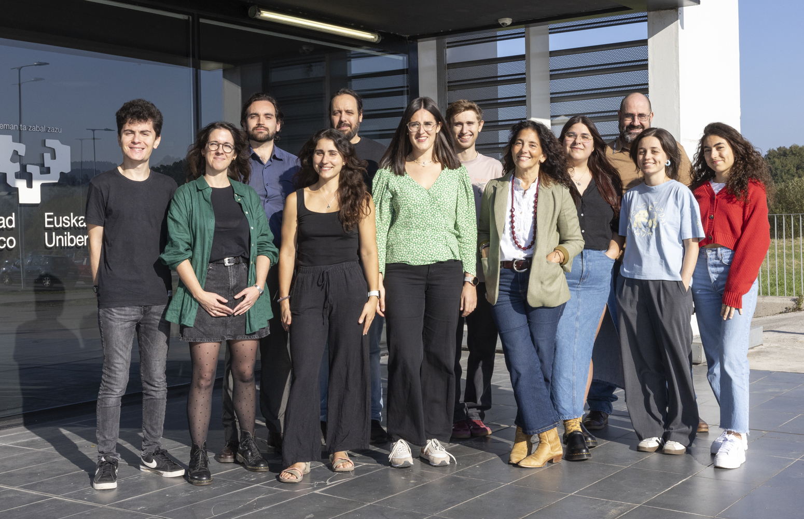

Lipids & Liver
[RESEARCH_GROUP // LAB_SYSTEM]
Investigamos de manera traslacional los mecanismos de señalización celular y reprogramación lipídica en esteatohepatitis no alcohólica (MASLD/MASH) y cáncer hepático primario, conectando biología molecular con la práctica clínica hospitalaria.

Plataforma avanzada equipada con UHPLC-MS/MS Triple Cuadrupolo (QQQ) y Q-TOF para análisis de perfiles de fosfolípidos, esfingolípidos, glicerolípidos y ácidos grasos con resolución cromatográfica de alta precisión.